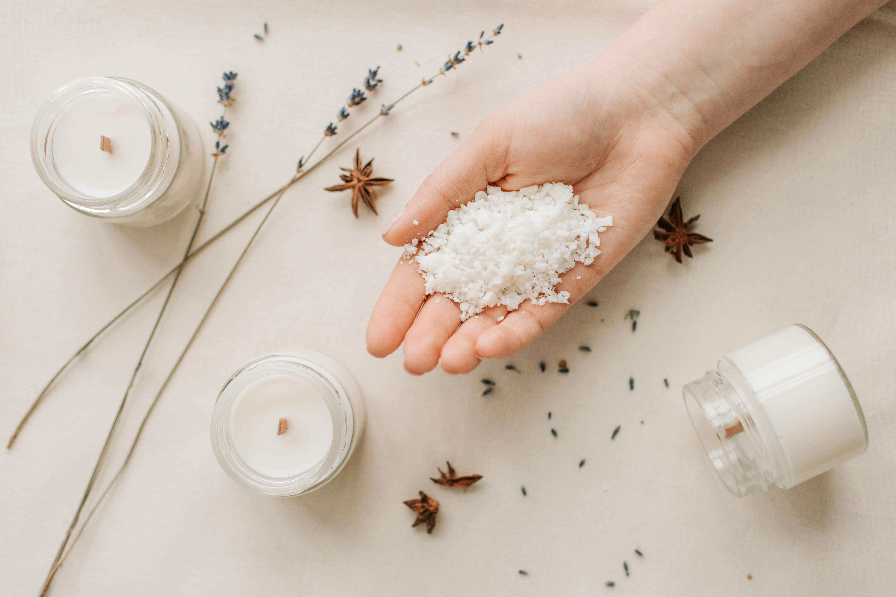

Candice Candle Art
The Aromatic Evolution: Birth of Scented Candles
The history of handmade aromatherapy candles dates back centuries, with the practice rooted in ancient civilizations. The earliest records of candle-making can be traced to the Egyptians, who used rushlights or torches made from soaked reeds in animal fat. The Greeks and Romans improved upon these early methods, utilizing tallow, a form of animal fat, to create candles for both practical and ceremonial purposes.

Handmade scented candles are crafted with care using a variety of high-quality materials to create a sensory experience that transcends the ordinary. The primary ingredients in crafting these exquisite candles include natural waxes, fragrance oils, and wicks.